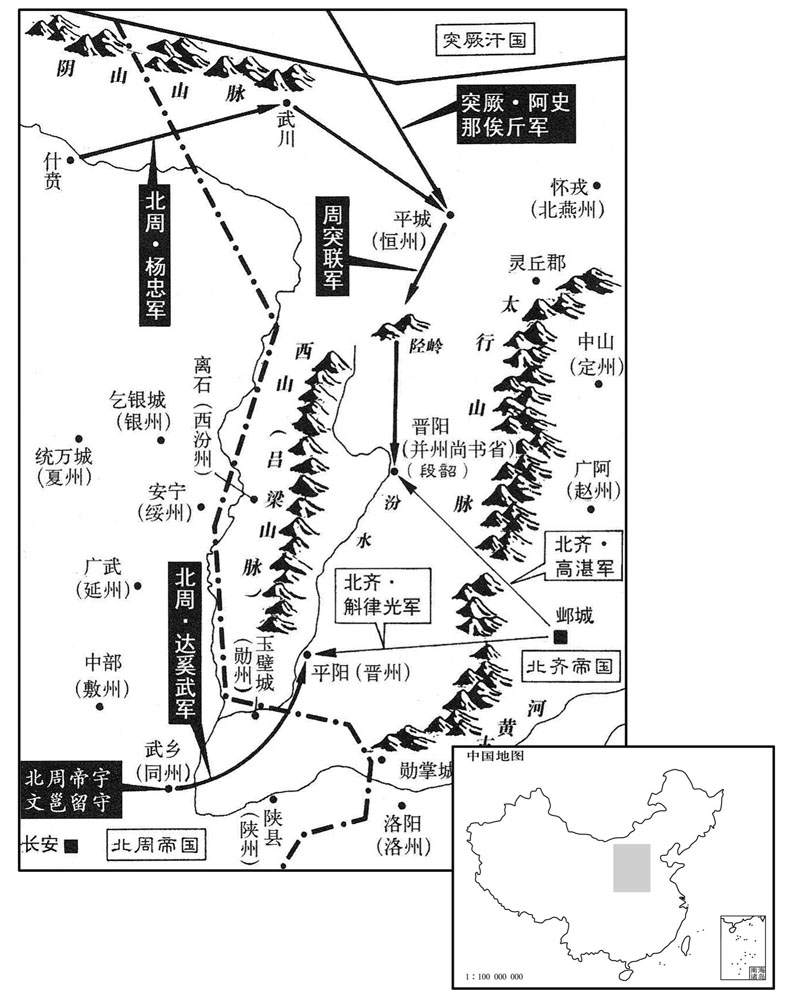
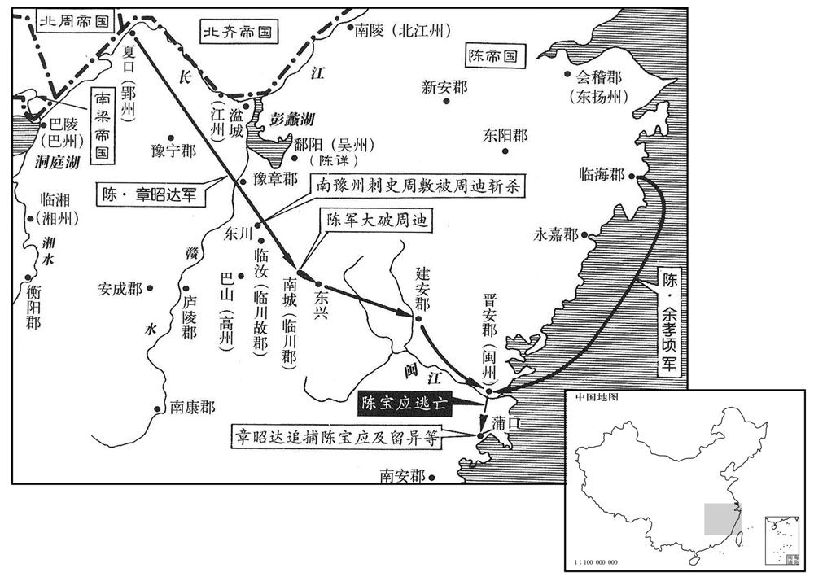

公元563年资治通鉴：本年记事、原文与白话对照
按原书编年位置阅读；追叙和史论不等于本年发生的事件。白话采用所据译本，缺译不以生成译文补齐。
卷169 · 本年记事
公元563年 · 陈世祖文皇帝天嘉四年
天嘉四年〔（癸未、五六三）〕
上传原文的注释括号有异常，字符原样保留；无法可靠划分的段落默认全文显示。
本年事件索引（现代整理）
- 北齐任魏收兼尚书右仆射，魏收随后因怯懦被免职
- 毕义云密信议论政局泄露，高元海遭高湛疏远并被杖责
- 周迪部众溃败，逃往晋安依附陈宝应
- 虞寄写信陈述十项理由劝陈宝应归附陈朝
- 宇文护逼侯莫陈崇自尽，因其预言宇文护将死
- 陈朝任黄法氍为南徐州刺史
- 北周命拓跋迪制定十五篇《大律》
- 陈朝任侯安都为江州刺史
- 宇文护获准其诏令和官府文书不直称其名
- 发生日食
- 北齐命斛律光筑勋掌城并修筑长城
- 北齐任赵彦深为尚书左仆射
- 北周任达奚武为太保
- 周武帝尊于谨为三老，亲自向他请教治国之道
- 侯安都恃功骄纵，陈文帝对他心生不满
- 陈文帝改派吴明彻讨伐周迪，并查问侯安都部下
- 陈文帝宴席上拘捕侯安都，随后赐死
- 陈武帝曾指出侯安都等将领各有短处
- 北齐派崔子武出使陈朝
- 和士开深受高湛宠信，劝高湛纵情享乐并委政大臣
- 高湛听信谗言毒杀劝谏的康献王高孝瑜
- 周武帝前往原州
- 北齐将三台宫改建为大兴圣寺
- 陈朝广州刺史欧阳頠去世，其子欧阳纥承袭爵位
- 周武帝登陇坂
- 周迪再次越岭侵扰陈朝，章昭达奉命讨伐
- 周武帝前往同州
- 北周与突厥结盟，约定共同攻齐
- 北周派杨忠率军与突厥联兵伐齐
- 章昭达大破周迪，周迪逃入山谷
- 周武帝返回长安
- 陈朝大赦
- 章昭达越岭进攻建安，讨伐陈宝应
- 陈朝首次在建康以天子礼祭祀始兴昭烈王
- 杨忠攻取北齐二十余城，周军与突厥进逼晋阳

本年形势与背景参考图
春，正月，齐以太子少傅魏收兼尚书右仆射。时齐主终日酣饮，朝事专委侍中高元海。〔酣，户甘翻。朝，直遥翻；下同。〕元海庸俗，帝亦轻之；以收才名素盛，故用之。而收畏懦避事，寻坐阿纵，除名。〔考异曰：北齐书帝纪，「正月，乙亥，收为仆射，奾卯，除名。」相去五日，不容如此之速，恐误，今去其日。〕
春季，正月，北齐任命太子少傅魏收兼尚书右仆射。当时武成帝整天酗酒，把朝廷的事情专门委托给侍中高元海。高元海鄙陋无能，武成帝也看不起他；因为魏收的才能一向有名，所以任命他。魏收胆小懦弱怕事，不久便以阿谀放纵的罪名，被革职。
兖州刺史毕义云作书与高元海，论叙时事，元海入宫，不觉遣之。给事中李孝贞得而奏之，帝由是疏元海，以孝贞兼中书舍人，征义云还朝。和士开复谮元海，〔复，扶又翻。〕帝以马鞭棰元海六十，责曰：「汝昔教我反，〔事见上卷二年。棰，止翻。〕以弟反兄，几许不义！以邺城兵抗并州，几许无智！」〔几，居岂翻。〕出为兖州刺史。
兖州刺史毕义云写信给高元海，信里议论时局，高元海在进宫时，不知不觉地把信遗失了。给事中李孝贞得到了这封信，奏报给武成帝，武成帝因此疏远高元海，任用李孝贞兼职中书舍人，召回毕义云。和士开再次对武成帝说高元海的坏话，武成帝命令打高元海六十下马鞭，斥责说：“你以前唆使我反叛，以弟弟反叛兄长，多么不义！用邺城的兵力抵抗并州，多么愚笨！”贬出朝延做兖州刺史。
甲申，周迪众溃，脱身踰岭，奔晋安，〔临川郡南城县有东兴岭，通晋安。〕依陈宝应。官军克临川，获迪妻子。宝应以兵资迪，留异又遣子忠臣随之。
甲申（十九日）周迪的部下溃败，他脱身越过东兴岭，逃奔到晋安，投靠陈宝应。官军攻下临州，俘虏了周迪的妻儿。陈宝应派兵援助周迪，留异又派儿子留忠臣跟随周迪。
虞寄与宝应书，以十事谏之曰：「自天厌梁德，英雄互起，人人自以为得之，然夷凶翦乱，四海乐推者，陈氏也；〔乐，音洛。〕岂非历数有在，惟天所授乎！一也。以王琳之强，侯瑱之力，进足以摇荡中原，争衡天下，退足以屈强江外，〔瑱，他甸翻，又音镇。屈，其勿翻。强，其两翻。〕雄张偏隅；〔张，知亮翻。〕然或命一旅之师，或资一士之说，琳则瓦解冰泮，投身异域，瑱则厥角稽颡，〔书泰誓曰：若崩厥角。言如角之崩也。孟子曰：若崩厥角稽首。文虽小异，意则大同。此止言厥角稽颡，当以颠蹶之蹶为义。说，式芮翻。稽，音启。〕委命阙庭，斯又天假其威而除其患。二也。今将军以藩戚之重，〔陈编宝应于属籍，故云然。〕东南之众，尽忠奉上，湏力勤王，岂不勋高窦融，〔窦融以河西归汉，累世贵盛。〕宠过吴芮，〔吴芮以长沙奉汉，高祖贤之，制诏御史：「长沙王忠，其定着令，」至传国五世。〕析珪判野，〔杨雄解嘲曰：折人之珪。师古注云：析，分也。判，亦分也。判野，谓画野分土，君国子民而传之后世也。〕南面称孤乎！三也。圣朝弃瑕忘过，宽厚得人，至于余孝顷、潘纯陀、李孝钦、欧阳頠等，〔朝，直遥翻。高祖永定元年，欧阳頠为周文育所禽。潘纯陀、李孝钦，皆王琳将也。孝钦及余孝顷，二年为周迪所禽，纯陀盖琳败而归陈也。頠，鱼委翻。〕悉委以心腹，任以爪牙，胸中豁然，曾无纤芥。况将军衅非张绣，罪异毕谌，〔张绣杀曹操之子，其后归操，操，厚待之。事见汉献帝纪。又，操为兖州，以毕谌为别驾。张邈以兖州叛，劫谌母弟妻子，操谢遣之。谌，顿首言无二心，既出，遂亡去。及破吕布，谌生得，众为之惧。操曰：「夫人孝于亲者，岂有不忠于君乎！吾所求也。」以为鲁相。衅，许觐翻。谌，氏壬翻。〕当何虑于危亡，何失于富贵！四也。方今周、齐邻睦，境外无虞，并兵一向，匪朝伊夕，非刘、项竞逐之机，楚、赵连从之势；〔从，子容翻。〕何得亥容高拱，坐论西伯哉！五也。〔范晔论隗嚣曰：若嚣命会符运，敌非天力，虽坐论西伯，岂为过哉！注云：言不遇光武为敌，则不谢西伯也。〕且留将军狼顾一隅，亟经摧饂，〔亟，去吏翻，频数也。〕声实亏丧，胆气衰沮。其将帅首鼠两端唯利是视，孰能被坚执锐，长驱深入，系马埋轮，奋不顾命，以先士卒者乎！六也。〔丧，息浪翻。沮，在吕翻。将，即亮翻。帅，所类翻。被，皮义翻。先，悉荐翻。〕将军之强，孰如侯景﹖将军之众，孰如王琳﹖武皇灭侯景于前，今上摧王琳于后，此乃天时，非复人力。〔复，扶又翻。〕且兵革已后，民皆厌乱，其孰能弃坟墓，捐妻子，出万死不顾之计，从将军于白刃之间乎！七也。历观前古，子阳、季孟，颠覆相寻；余善、右渠，危亡继及。〔及阳，公孙述字；季孟，隗嚣字。二人事见汉光武纪。余善、右渠事见汉武帝纪。〕天命可畏，山川难恃。况将军欲以数郡之地当天下之兵，以诸侯之资拒天子之命，强弱逆顺，可得侔乎！八也。且非我族类，其心必异；〔左传季文子引史件之言。〕不爱其亲，岂能及物！留将军身縻国爵，子尚王姬，〔易曰：我有好爵，吾与尔縻之。子尚王姬谓异子贞臣尚主也。〕犹且弃天属而不顾，背明君而孤立，危急之日，丰能同忧共患，不背将军者乎！〔背，蒲妹翻。〕至于师老力屈，惧诛利赏，必有韩、智晋阳之谋，张、陈井陉之势。九也。〔韩、智事见一卷周威烈王二十三年。张、陈事始秦二世三年，终汉高帝三年。陉，音刑。〕北军万里远鬬，锋不可当。〔兵自建康来，建于晋安为北，故曰北军。万里远鬬者，无反顾之心，有必死之志，故其锋不可当。〕将军自战其地，人多顾后；众寡不敌，将帅不侔。师以无名而出，事以无机而动，以此称兵，〔称，犹举也。〕未知其利。十也。为将军计，莫若绝亲留氏，〔宝应娶留异之女为妻。〕释〔【章：十二行本「释」上有「遣子入质」四字；乙十一行本同；孔本同；张校同；退斋校同。】〕甲偃兵，一遵诏旨。方令藩维尚少，〔少，诗沼翻。〕皇子幼冲，凡豫宗族，皆蒙宠树。况以将军之地，将军之才，将军之名，将军之势，而克修藩服，北面称臣，宁与刘泽同年而语其功业哉！〔刘泽，汉高祖疏属，事见十三卷汉高后七年。〕寄感恩怀德，不觉狂言，斧钺之诛，其日如荠。」〔荠，齐济翻。〕宝应览书大怒。或谓宝应曰：「虞公病势稍笃，言多错谬。」宝应意乃小释，亦以寄民望，故优容之。
虞寄写信给陈宝应，举出十件事情规劝他说：“自从上天厌恶梁朝德业不修以来，英雄纷起，人人以为天下非已莫属，然而除凶平乱，天下愿意推戴的崐，是陈氏；岂不是有天道运命在，是上天所赐给的吗！这是一。以王琳的强盛，侯的力量，进可以震撼中原，在天下争个高低；退足以在长江以外倔强，雄踞偏远一角。然而我们或者派遣一支军队，或者借助一名说客，王琳就瓦碎冰融，去异域投身，侯就叩头俯伏，托命于朝廷，这是借天威而除掉祸患。这是二。现在您将军以藩王亲戚之贵，东南人力之众，尽忠报效朝廷，全力救援皇上，功勋岂不比汉朝的窦融高，受宠超过吴芮，得到封爵和领地，能面向南坐称王称侯吗！这是三。圣明的朝廷不计较人的缺点和过错，以宽厚求得人才，至于像余孝顷、潘纯陀、李孝钦、欧阳等人，都把他们当成心腹，任为助手，胸怀开朗，不计较细微的事。况且您将军的过失不如张绣，罪行不同于毕谌，何必顾虑危险存亡，又哪里会失去富贵！这是四。现在周、齐两朝睦邻友好，境外不须疑虑，联合军队对着同一方向，已经有很长时间，不是刘邦、项羽竞争追逐的时机，楚国和赵国合纵连横的形势；怎么能从容不迫无所作为，安然割据为一方的主帅！这是五。况且留异将军在角落里像狼那样窥伺，屡次遭到挫败，名声亏损丧尽，胆气衰退败落。他的将帅犹豫动摇，只看到自己的私利，谁能穿着铠甲、拿着锐利的武器，长驱直入，系住马匹埋掉车轮，奋勇舍命，身先士卒地战斗！这是六。将军力量的强弱，比侯景怎样？将军部下的众多，比王琳如何？武皇帝灭侯景于前，当今皇帝击败王琳于后，这是天意，不是靠人力。况且争战以后，百姓都讨厌动乱，谁能抛弃故园家乡，舍弃妻儿，想出万死不辞的计谋，追随您将军在刀丛之间效命吗！这是七。综观以往历史，子阳（公孙述）、季孟（隗嚣），灭亡连续不断；馀善、右渠，危急覆亡接踵而至。天命可畏，山川地势难以凭借。况且您将军想以几个郡的地方来抵御天下的兵力，以诸侯的实力抗拒天子的命令，强弱逆顺，能相比较吗！这是八。不是自己的同类，心意一定不同；不爱自己的亲朋，怎能顾及别人！留异将军身系国家的爵位，儿子娶了皇家的女儿，尚且抛弃上天的眷顾而不惜，背离圣明的君主而孤立，遇到危急的时候，怎么能共同分担忧患，而不背叛您将军！等到用兵时间过长，军队疲劳不堪，就会怕死贪财，一定会出现康子、智伯在晋阳的阴谋，张耳、陈馀在井陉那样的争斗。这是九。北军远从万里来战斗，前锋锐利不可阻挡。您将军在自己的地区打仗，人们多有后顾之忧，众寡不敌，将帅与敌军不能相比。师出无名，做事没有机会而妄动，在这种情况下举兵，不会有好处。这是十。为您将军着想，不如断绝和留氏的亲戚关系，解甲息兵，遵从皇帝的诏旨。现在捍卫和支持朝廷的人还少，皇子年幼，凡是宗族，都受到恩宠扶植。况且以您将军的门第、才干、名声、势力，能谨守作臣的职责，臣服君王，这样您的功业就能和刘泽相提并论了！虞寄感恩戴德，不禁说了这些狂妄的话，要杀要砍，我心甘情愿。”陈宝应看后大怒。有人向陈宝应说：“虞公的病情加重了，所以说话多有错误荒谬。”陈宝应的怒意才稍为平息，又因为虞寄有民望，所以宽容他。
周梁躁公侯莫陈崇从周主如原州。〔谥法：好变动民曰躁。〕帝夜还长安，人窃怪其故，崇谓所亲曰：「吾比闻术者言，晋公今年不利，车驾今忽夜还，不过晋公死耳。」〔比，毗至翻。宇文护封晋公。〕或发其事。乙酉，帝召诸公于大德殿，面责崇，崇惶恐谢罪。其夜，耱宰护遣使将兵就崇第，逼令自杀，〔护当恐惧修省，引咎避权，不当专杀功臣。使，疏吏翻。将，即亮翻。〕葬如常仪。
北周的梁躁公侯莫陈崇跟随北周国主武帝去原州。武帝当晚就回长安，人们私下怀疑其中的原因，侯莫陈崇告诉亲信说：“我近来听方士说，晋公宇文护今年不吉利，皇上今天突然在晚上赶回来，不过是晋公宇文护死了。”有人把这件事告发了。乙酉（二十日），武帝在大德殿召见了公侯们，当面斥责侯莫陈崇，侯莫陈崇诚惶诚恐地承认有罪。这天晚上，冢宰宇文护派遣使者带领士兵到侯莫陈崇家里，逼他自杀，然后按固有的仪式把他埋葬。
壬辰，以高州刺史黄法鳓为南徐州刺史，临川太守周放为南豫州刺史。〔五代志：高凉郡，梁置高州。南豫州，时治宜城。鳓，巨俱翻。〕
壬辰（二十七日），陈朝任命高州刺史黄法氍为南徐州刺史，临川太守周敷为南豫州刺史。
周主命司宪大夫拓跋迪〔唐六典：御史大夫，奏官。历晋、宋、齐、梁、陈、后魏、北齐、后周，并不置大夫，而以中丞为台主。后周秋官置司宪中大夫二人，掌丞司寇之法，以左右刑罚，盖比御史中丞之职也。〕造大律十五篇。〔【章：十二行本「篇」下有「二月庚子颁行之」七字；乙十一行本同；孔本同；张校同；退斋校同。五代志：周造大律凡二十五篇：一到名，二法例，三祀享，四朝会，五婚姻，六户禁，七水火，八兴缮，九卫宫，十市廛，十一鬬竞，十二劫盗，十三贼叛，十四毁亡，十五断狱。当从志作「二十五篇」。〕其制罪：一曰杖刑，自十至五十；二曰鞭刑，自六十至百；三曰徒刑，自一年至五年；四曰流刑，自二千五百里至四千五里；五曰死刑，磬、绞、斩、枭、裂；〔古者公族有罪，磬于甸人。郑玄曰：悬缢杀之曰磬。绞吏，全其身首。斩者，殊死。枭者，挂其首于木上。裂者，车裂。枭，坚尧翻。〕凡二十五等。〔五刑之属各有五，合二十五等。〕
北周武帝命令司宪大夫拓跋迪制定《大律》十五篇，规定对犯罪的惩罚：一是杖刑，杖十到五十下；二是鞭刑，鞭打六十到一百下；三是徒刑，刑期从一年到五年；四是流刑，流放二千五百里到四千五百里；五是死刑，分缢崐死、绞死、斩首、将首级悬挂示众、用车裂尸；一共分二十五等。
庚戌，以司空南徐州刺史侯安都为江州刺史。
庚戌（十六日），陈朝任命司空南徐州刺史侯安都为江州刺史。
辛酉，周诏：「大耱宰晋国安，亲则懿昆，〔昆，兄也。〕任当元辅，自今诏诰及百司文书，并不得称公名。」护抗表固让。
辛酉（二十七日），北周武帝下诏：“大冢宰晋国公，是我的兄长，职位是朝延为首的大臣，今后凡是诏令诰书和所有官署的文书里，不准直呼其名。”宇文护对诏令坚决不服从，表示谦让。
三月，乙丑朔，日有食之。
三月，乙丑朔（初一），出现日食。
齐诏司空斛律光督步骑二万，筑勋掌城于轵关；〔五代志：轵关，在河内郡王屋县。骑，奇寄翻。轵，音只。〕仍筑长城二百里，置十二戍。
北齐武成帝高湛诏令司空斛律光督带二万名步、骑兵，到轵关建造勋掌城，构筑了二百里的长城，设立十二个戌所。
丙戌，齐以兼尚书右仆射赵彦深为左仆射。〔「左仆射」，当作「右仆射」，盖先是兼官，今正除右仆射也。〕
丙戌（二十四日），北齐任命兼尚书右仆射赵彦深为左仆射。
夏，四月，乙未，周以柱国达奚武为太保。
夏季，四月，乙未（初二），北周任命柱国达奚武为太保。
周主将视学，以太傅燕国公于谨为三老。〔燕，因肩翻。〕谨上表固辞，不许，仍赐以延年杖。戊午，帝幸太学。谨入明，帝迎拜于明屏之间，谨答拜。有司设三老席于中楹，南向。太师护升阶，设几，谨升席，南面凭几而坐。大司马豆卢宁升阶，下舄。帝升阶，立于斧扆之前，西面。〔扆，屏风也。斧扆，画文为斧形。扆，于岂翻。〕有司进馔，帝跪设酱豆，〔酱，食味之主。古之养老，执酱而馈，今跪而设豆。〕亲为之袒割。〔为，于伪翻。袒割，袒而割性也。〕谨食毕，帝亲跪授爵以酳。〔酳，羊晋翻；以酒漱口也。〕有司撤讫，帝北面立而访道。谨起，立于席后，对曰：「木受绳则正，后从谏则圣。〔书傅说告高宗之言。〕明王虚心纳谏以知得失，天下乃安。」又曰：「去食去兵，信不可去；〔论语孔子答子贡之言。去，羌吕翻。〕愿陛下守信勿失。」又曰：「有功必赏，有罪必罚，则为善者日进，为恶者日止。」又曰：「言行者，立身之基，〔行，下孟翻。〕愿陛下三思而言，九虑而行，勿使有过。天子之过，如日月之食，人莫不知，愿陛下慎之。」帝再拜受言，谨答拜。礼成而出。〔三代而下，视学、养老、乞言之礼，唯汉明帝、周武帝行之。〕
北周武帝准备巡视学校，任命太傅燕国公于谨为掌管国家教化的“三老”。于谨上书坚决推辞，没有得到准许，仍旧赏赐他“延年杖”。戊午（二十五日），武帝驾临太学。于谨进门时，武帝在大门和屏风之间迎接他，于谨答谢还礼。官员在厅堂中间设下三老席，坐位朝南。太师宇文护走上台阶，摆了一张小桌子，于谨入席，而朝南倚着小桌子坐定。大司马豆卢宁走上台阶，把于谨脱下的鞋子放端正。武帝走上台阶，站在画有斧状图案的屏风前，面朝西。官员送上饮食，武帝跪着放好盛放调料的食器，挽起衣袖为于谨割肉，于谨吃完后，武帝亲自跪着送上盛酒的酒器请于谨漱口。官员撤去饮食器皿，武帝面朝北站着向于谨请教治理国家的道理。于谨起身站在坐席后面，回答说：“木材经过墨线校正才能平直，帝王能听从规劝就是圣明。明理的帝王能虚心听取规劝可以知道自己的得失，这样天下就能安定。”又说：“即使失去食物和军队，但不能失去信用；希望陛下不要失去信用。”又说：“有功必赏，有罪必罚，那么做好事的人会一天比一天多，做坏事的人会一天比一天少。”还说：“言论和行为，是立身的根本，希望陛下三思以后再说话，九次考虑以后再行动，不要发生过错。天子有了过错，正象日食和月食那样，没有人不知道的，希望陛下一定要谨慎从事。”武帝再次拜谢表示听从，于谨答谢还礼。仪礼结束后武帝离开太学。
司空侯安都恃功骄横，〔横，户孟翻。〕数聚文武之士骑射赋诗，〔数，所角翻；下又数同。骑，奇寄翻。〕斋中宾客，动至千人。部下将帅，多不遵法度，检问收摄，〔摄，录也，捕也。将，即亮翻。帅，所类翻。〕辄奔归安都。上性严整，内衔之，安都弗之觉。每有表启，封讫，有事未，尽，开封自书之云：「又启芋事。」及侍宴，酒酣，或箕踞倾倚。常陪乐游园禊饮，〔乐，音洛。〕谓上曰：「河如作临川王时﹖」上不应。安都再三言之。上曰：「此虽天命，抑亦明公之力。」宴讫，启借供帐水饰，欲载妻妾于御堂宴饮。上虽许之，意甚不怿。明日，安都坐于御座，宾客居群臣位，称觞上寿。〔上，时掌翻。〕会重云殿灾，安都帅将士带甲入殿，下甚恶之，阴为之备。〔此皆日前事，史历叙安都致败之由。重，直龙翻。恶，乌路翻。〕
陈朝的司空侯安都自恃有功骄傲蛮横，屡次纠集文人武士骑射赋诗，住处的宾客，往往多到上千人。部下的将帅，大都不遵纪守法，遇到被检举搜崐捕捉拿，常常投奔侯安都。陈文帝性格严厉认真，对他含恨在心，而侯安都却毫无觉察。每逢向皇帝上表启事，信已经封好，想到有些事还没有写完，又拆开封口补写：“又启奏某某事。”在侍侯皇帝宴会时，酒喝得痛快时，有时就伸腿而坐歪斜着身子。他常陪文帝到乐游园举行修禊宴饮，饮酒时对文帝说：“现在比作临川王时如何？”文帝不理他。侯安都却再三提这件事。文帝说：“这虽然是天命，却也是靠您的力量。”宴饮结束，侯安都向文帝借帷帐和彩船，要载上妻妾去皇帝的宫室摆宴饮酒。文帝虽然允准了他的要求，心里却很不高兴。第二天，侯安都坐在皇帝的座位上，宾客们坐在大臣的位子上，举杯为他祝寿。恰巧重云殿发生火灾，侯安都率领将士携带兵器来到重云殿，文帝非常恨他，暗下作了准备。
及周迪反，朝议谓当使安都讨之，〔朝，直遥翻；下同。〕而上更使吴明彻。〔更，工衡翻。〕又数遣台使按问安都部下，检括亡叛。〔使，疏吏翻。〕安都遣其别驾周弘实自托于舍蔡景历，〔蔡景历为中书舍人，自武帝以来，特蒙亲任，盖陈朝事权皆在书也。〕并问省中事。景历录其状，具奏之，因希旨称安都谋反。上虑其不受召，故用为江州。
到了周迪造反时，朝中议论说应该派侯安都去讨伐，但文帝另派了吴明彻。文帝还屡次派御史台的官员审讯侯安都的部下，清查他们逃亡叛乱的事情。侯安都派别驾周弘实投身到中书舍人蔡景历那里，探听中书省的机密。蔡景历把他的行动一一记录下来，报告了文帝，迎合文帝的意旨说侯安都要谋反。文帝考虑到侯安都不会接受召命，使任命他去江州当刺史。
五月，安都自京口还建康，部伍入于石头。六月，帝引安都宴于嘉德殿，又集其部下将帅会于尚书朝堂，于坐收安都，囚于嘉德西省，〔坐，徂卧翻。〕又收其将帅，尽夺马仗而释之。因出蔡景历表，以示于朝，乃下诏暴其罪恶，明日，赐死，宥其妻子，资其丧。
五月，侯安都从京口回建康，部下的军队开进石头城。六月，文帝招侯安都到嘉德殿宴饮，又召集侯安都部下的将帅到尚书省的大厅见面，于是逮捕了侯安都，把他囚禁在嘉德西省，又逮捕了侯安都的将帅，没收了他们的马匹兵器后予以释放。还拿出蔡景历所上的奏报，向朝中的官员们出示，随即下诏公布了侯安都的罪恶，第二天，赐他自尽，宽恕了他的妻儿，拨款给他们办丧事。
初，高祖在京口，〔高祖与王僧辩既平台城，出镇京口。〕尝与诸将宴，杜僧明、周文育、侯安都为寿，〔春觞上寿也。〕各称功伐。积功曰伐。〕高祖曰：「卿等悉良将也，而并有所短。杜公志大而识闇，狎于下而骄于上；周侯交不择人，而推心过差；侯郎帒诞而无厌，轻佻而肆志；〔厌，于盐翻。佻，他雕翻。〕并非全身之道。」卒皆如其言。〔「知臣莫若君」，诚哉是言也。卒，子恤翻。〕
当初，陈武帝在京口时曾经和将军们宴会，杜僧明、周文育、侯安都为他祝寿，各自夸耀战功。陈武帝说：“诸位都是良将，但各有不足之处。杜公志向虽大而见识不明，对下亲密对上骄傲；周侯不能有选择地结交朋友，而且过于推心置腹；侯郎傲慢放诞而贪得无厌，性格轻佻而放纵不羁；这都不是保全身家的行为。”后来果然象他所说的那样。
乙卯，齐主使兼散骑常侍崔子武来聘。〔散，悉亶翻。骑，奇寄翻；下同。〕
乙卯（二十三日），北齐武成帝派兼散骑常侍崔子武来陈朝聘问。
齐侍中、开府仪同三司和士开有宠于齐主，齐主外朝视事，或布内宴赏，须臾之间，不得与士开相见，或累日不归，一日数入；或于还之后，俄顷即追，未至之间，连骑督趣。〔趣，读曰促。〕奸谄百端，宠爱日隆，前后赏赐，不可胜纪。每侍左右，言辞容止，极诸鄙亵；以夜继昼，无复君臣之礼。常谓帝曰：「自古帝王，尽为灰土，〔尧舜、桀纣，竟复何异！陛下宜及少壮，极意为乐，纵横行之。〔胜，音升。复，扶又翻。少，诗照翻。乐，音洛。纵，子容翻。〕一日取快，可敌千年。国事尽付大臣，何虑不办，无为自勤约也！」帝大悦。于是委赵彦深掌官爵，元文遥掌财用，唐邕掌外、骑兵，〔外兵及骑兵也。勃海王欢相魏，丞相府外兵曹、骑兵曹分掌兵马。及文宣受禅，诸司咸归尚书，惟此二曹不废，谓之外兵省、骑兵省。据和士开传，时委邕掌外兵，白建掌骑兵。〕信都冯子琮、胡长粲掌东宫。帝三四日一视朝，书数字而已，〔朝，直遥翻。〕略无所言，须臾罢入。长粲，僧敬之子也。〔胡僧敬见一百五十八卷梁武帝大同七年。〕
北齐的侍中、开府仪同三司和士开得到武成帝的宠爱，武成帝外出视察，或在宫中宴请时，过不了一会儿，就要召和士开来见面，或者留他好几天，或者一天里召他进宫许多次；或者和士开刚走，又立刻追他回来，在和士开还没回来以前，接二连三派人骑马去催促。由于他各式各样的奸诈谄媚，受到武成帝的日益宠爱，前后赏赐给他的物品，数不胜数。每当在武成帝身边侍候，说话和动作极其卑鄙下流；夜以继日，毫无君臣之礼。他常常告诉武成帝说：“自古以来的帝王，都成了灰土，尧舜和桀纣，有什么两样！陛下应当在少崐壮时恣意行乐，放纵而不必顾忌。快乐一天，比得上一千年。国事都交给大臣，何必担心办不成，不用自己劳累约束自己！”武成帝大喜。于是委托赵彦深掌管封官授爵，元文遥掌管钱财费用，唐邕掌管外兵和骑兵，信都人冯子琮、胡长粲掌管东宫。武成帝三四天才上一次朝，批几个字，也不说什么话，一会儿就退朝进宫。胡长粲是胡僧敬的儿子。
帝使士开与胡后握槊。河南康献王孝瑜谏曰：「皇后天下之母，岂可与臣下接手！」孝瑜又言：「赵郡王叡，其父死于非命，〔叡父琛，勃海王欢之弟也，乱欢后庭，因杖而毙。〕不可亲近。」〔近，其靳翻。〕由是叡乃士开共谮之。士开言孝瑜奢僭，叡言「山东唯闻河南王，不闻有陛下。」〔齐主多居晋阳，在山西；司、冀、定、殷、瀛、沧之地，皆在山东。〕帝由是忌之。大怒。庚申，顿饮孝瑜酒三十七杯。〔饮，于禁翻。〕孝瑜体肥大，腰带十围，帝使左右娄子彦载以出，酖之于车，至西华门，烦躁投水而绝。〔躁，则到翻。〕赠太尉、录尚书事。诸侯在宫中者，莫敢举声，唯河间王孝琬大哭而出。〔孝琬，孝瑜之弟也。〕
武成帝叫和士开和胡后玩“握槊”的赌博游戏。河南康献王高孝瑜规劝说：“皇后是天下人的母亲，怎么可以和臣子的手接触！”又说：“赵郡王高睿，他的父亲死于非命，不可以和他亲近。”因此高睿和士开一起说高孝瑜的坏话。和士开说高孝瑜生活奢侈超过他的身份，高睿说：“山东只听说有河南王，没有听说有您陛下。”武成帝因此产生了嫉妒。高孝瑜偷偷地和尔朱御女说话，关系暧昧，武成帝听到这事，勃然大怒。庚申（二十八日），一次叫高孝瑜饮了三十七杯酒。高孝瑜身体肥大，腰带十围，武成帝叫在旁边侍候的近臣娄子彦用车送他出去，在车上又给他饮了毒酒，到西华门时，毒性发作烦躁投水而死。追赠太尉、录尚书事。在宫里的诸侯，都不敢出声，只有河间王高孝琬大哭而去。
秋，七月，戊辰，周主幸原州。
秋季，七月，戊辰（初六），北周武帝驾临原州。
八月，辛丑，齐以三台宫为大兴圣寺。
八月，辛丑（初十），北齐把三台宫改为大兴圣寺。
九月，壬戌，广州刺史阳山穆公欧阳頠卒，诏子纥袭父爵位。〔阳山郡公。五代志：南海郡含渥县，梁置阳山郡。为欧阳纥不就征、阻兵而反张本。頠，鱼委翻。纥，下没翻。〕
九月，壬戌（初一），陈朝的广州刺史阳山穆公欧阳去世，下诏他的儿子欧阳纥承袭父亲的爵位。
甲子，周主自原州登陇。〔登陇坂也。〕
甲子（初三），北周武帝从原州登上陇坂。
周迪复越东兴岭为寇，〔东兴岭，在临川郡南城县界。唐志，抚州南城县，武德四年，析置永城、东兴二县，七年省。沈约曰：东兴县，吴立，属临川郡。复，扶又翻。〕辛未，诏护军章昭达将兵讨之。〔昭达时为护军将军。〕
陈朝因周迪又越过东兴岭侵犯，辛未（初十），诏命护军章昭达率领军队去讨伐。
丙戌，周主如同州。
丙戌（二十五日），北周武帝去同州。
初，周人欲与突厥木杆可汗连兵伐齐，〔厥，九勿翻。杆，公旦翻。可，从刊入声。汗，音寒。〕许纳其女为司，遣御伯大夫杨荐〔唐六典曰：后周天官新置御伯中大夫二人，天子出入则于左右，大祭祀盥洗月钊授巾。武帝改御伯为纳言，盖侍中之职也。宣帝末，又别置侍中加官。〕及左武伯太原王庆〔左武伯，盖待卫之官，注见后。〕往结之。齐人闻之惧，亦遣使求婚于突厥，赂遗甚厚。〔使，疏吏翻。遗，于季翻。〕木杆贪齐币重，欲执荐等送齐。荐知之，责木杆曰：「太祖昔与可汗共敦邻好，〔好，呼到翻。〕蠕蠕部落数千来降，太祖悉以付可汗使者，以快可汗之意，〔事见一百六十六卷梁敬帝绍泰元夫。襦，人兖翻。降，户江翻。〕如何今日遽欲背恩忘义，独不愧鬼神乎﹖」〔背，蒲妹翻。〕木杆惨然良久曰：「君言是也。吾意决矣，当相与共平东贼，然后遣女。」荐等复命。〔考异曰：典略在保定二年。按王庆传云，是岁乃兴入并之役。故置于此。〕
起初，北周要和突厥木杆可汗联军讨伐北齐，答允娶可汗的女儿做皇后，派御伯大夫杨荐和左武伯太原人王庆去联系。北齐听了害怕，也派使者到突厥去求婚，馈赠厚礼。木杆可汗贪图北齐的厚礼，企图捉了杨荐等人送给北齐。杨荐知道后，斥责木杆可汗说：“太祖从前和可汗共同敦守友好相处，蠕蠕部落几千人来投降，太祖把他们全部交给可汗的使者，以满足可汗的要求，为什么今天忽然背恩忘义，唯独不有愧于鬼神吗？”木杆可汗悲痛了很久，说：“您的话很对。我的主意已经决定了，应该和你们一起讨平东面的贼人，然后把女儿送去。”杨荐等人完成使命后回朝复命。
公卿请发十万击齐，柱国杨忠独以为得万骑足矣。」戊子，遣忠将步骑一万，与突厥自北道伐齐，又遣大将军达奚武帅步骑三万，自南道出平阳，期会于晋阳。〔忠将，即亮翻，又音如字，领也。骑，奇寄翻。帅，读曰率；下同。〕
北周的公卿请发兵十万攻打北齐，柱国杨忠认为只要一万名骑兵就足够了。戊子（二十七日），武帝派杨忠率领一万名步骑兵，和突厥从北面的道路讨崐伐北齐，又派大将军达奚武率领三万名步、骑兵，从南面的道路由平阳出发，约期在晋阳会师。
冬，十一月，辛酉，章昭达大破周迪。迪脱身潜窜山谷，民相与匿之，虽加诛戮，无肯言者。
冬季，十一月，辛酉（初一），陈朝章昭达大破周迪。周迪脱身潜伏逃窜到山谷里，老百姓把他隐藏起来，虽然受到诛杀，却没人肯说出来。
十二月，辛卯，周主还长安。〔自陇上还。〕
十二月，辛卯（初一），北周武帝回长安。
丙申，大赦。
丙申（初六），陈朝大赦全国。
章昭达进军，度岭，趣建安，讨陈宝应，〔趣，七喻翻。〕诏益州刺史余孝顷〔梁元帝之世，益州之地巳入于周，陈命余孝顷遥领益州刺史耳。〕督会稽、东阳、永嘉诸军自东道会之。〔会，工外翻。〕
陈朝的章昭达进军，经过东兴岭，向建安急进，讨伐陈宝应，文帝诏命益州刺史余孝顷督率会稽、东阳、临海、永嘉等地军队从东路来会合。

是岁，初祭始兴昭烈王于建康，用天子礼。〔帝嗣高祖，以子伯茂奉始兴昭烈王之祀。今初以天子礼祀之，非礼也。〕
这一年，陈朝在建康第一次祭祀始兴昭烈王，用天子的祭礼。
周杨忠拔齐二十余城。齐人守陉岭之隘，〔唐志：代州鴈门县有陉关、西陉关。陉，音刑。隘，乌懈翻。〕忠击破之。突厥木杆、地头、步离三可汗以十万骑会之。〔木杆分国为三部：木杆牙帐居都斤山，地头可汗统东方，步离可汗统西方。厥，九勿翻。杆，公旦翻。〕己丑，自恒州三道具入。〔恒，户登翻。〕时大雪数旬，南北千余里，平地数尺。齐主自邺倍道赴之，戊午，至晋阳。斛律光将步兵〔【章：十二行本「兵」作「骑」；乙十一行本同；孔本同。】〕三万屯平阳。〔拒达奚武之兵也。〕己未，周师及突厥逼晋阳。齐主畏其强，戎服帅宫人欲东走避之。赵郡王叡、河间王孝琬叩马谏。孝琬请委叡部分，〔分，扶问翻。〕必得严整。帝从之，命六军进止皆取叡节度，而使并州刺史段韶总之。〔委叡部分而段韶总其事。〕
北周杨忠攻克北齐的二十多座城池。北齐人防守陉岭的山口，杨忠攻破这里的防守。突厥的木杆、地头、步离三个可汗率领十万骑兵来会合。已酉（十九日），从恒州分三路一齐进入。当时下了几十天的大雪，南北一千多里，平地积雪几尺。北齐武成帝从邺城兼程赶去，戊午（二十八日），到晋阳，斛律光率领三万步兵驻守平阳。已未（二十九日），北周军队和突厥逼近晋阳。北齐武成帝对这些强大的军队感到害怕，穿上军服领了宫女打算从东面逃走躲避。赵郡王高睿、河间王高孝琬勒住他的马进行规劝。高孝琬请求把军队委托给高睿部署，可以使军队得到整顿。武成帝采纳了意见，命令六军的行动都受高睿的指挥，派并州刺史段韶总辖。